最近海外 AI 圈讨论得很热的一个产品，叫 Muse（读作“缪兹”，中文常译“缪斯”）。它是 Meta 推出的个人 AI Agent。9 月中旬，Axios 报道它曾登上美国 iPhone 免费应用榜榜首；这能说明关注度，但不代表它适合每个人。Axios 报道
如果你没听过 Meta，先记住一句：它是一家美国科技公司，也是 Facebook、Instagram、WhatsApp 背后的公司，总部在美国加州门洛帕克。你可以把 Facebook 想成海外社交平台、Instagram 想成海外图片和短视频社区、WhatsApp 想成海外常用的聊天软件。Muse 则是 Meta 新推出的 AI 工具。Meta 2025 年报 · Meta 产品说明
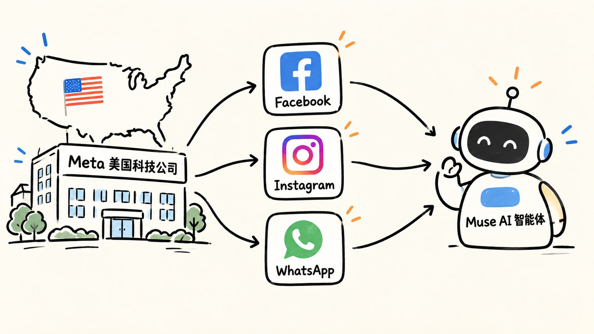
这篇就用大白话讲清楚：它到底是什么、能替你做哪些事、目前在哪能用。
先别被 Agent 这个词吓到。它不是一个会走路的实体机器人，而是一个在软件和云端工作的 AI 智能体。你可以把 Muse 理解成一个住在云端的跑腿助手：你说想办什么事，它会自己查资料、打开网页、整理信息、推进步骤；碰到发邮件、付款这类关键操作，再来找你确认。
以前，我们和 AI 的关系大多是“我提问，它回答”。比如你问“周末去哪里玩”，它给你列出几个地方。问题是，真正麻烦的往往在后面：查车次、比酒店、算预算、协调时间、填预订信息。Muse 想接手的，正是这些零碎步骤。
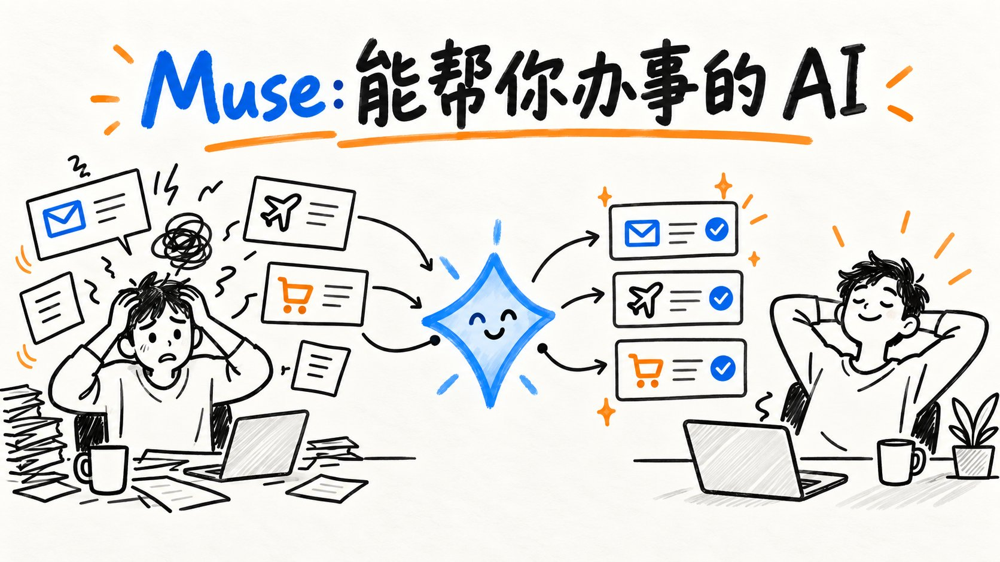
一、什么叫“它能替你做事”？
拿旅行举例。你可以告诉它：“下个月找个周末去海边，预算 3000 元以内，交通别太折腾，先给我三个方案。”
它要做的就不只是写一篇“海边旅游攻略”，而是去查选项、比较价格和时间、整理成你能做决定的方案。如果你选中一个，再让它继续准备预订。到了需要付款的地方，页面和金额应该交给你看，由你确认。
这个例子是理解产品工作方式的假设场景，不是我已经实测完成了一次订票。Meta 官方列出的能力包括浏览网页、填写表单、安排旅行、发送邮件，以及在购买等敏感动作前请求用户批准。Meta 产品介绍
用大白话说，区别是这样的：
普通聊天：你问“怎么订”，AI 告诉你步骤。 Muse 这类 Agent：你说“帮我准备好”，它自己去跑步骤，重要动作让你拍板。
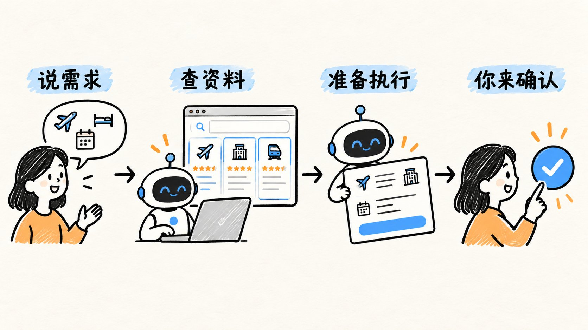
二、打开 Muse 后，里面都有什么？
我把实际打开应用时截的画面放在下面。先看对话：我问 Muse“你能做什么”，它直接列出查资料、写文档、做表格、处理文件和上网操作这些方向。
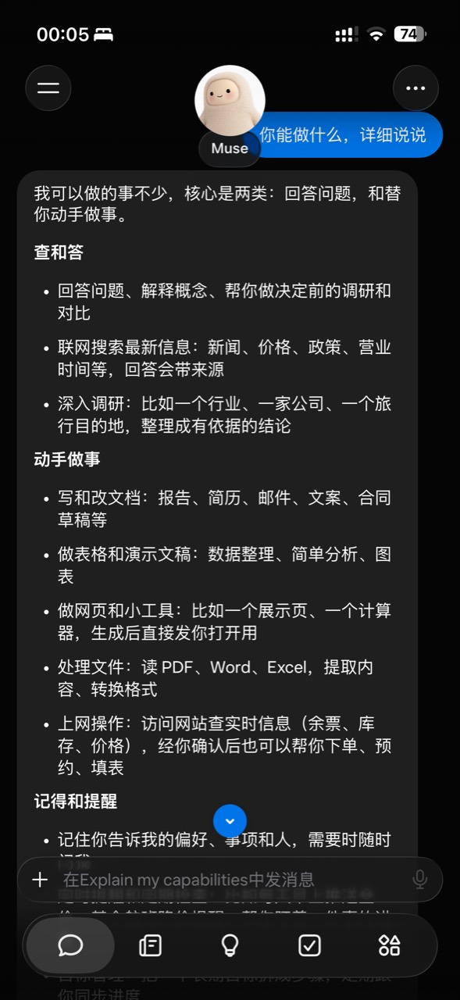
这张图最直观的一点是：你不用先研究复杂菜单，像聊天一样把需求说出来就行。上面列的是 Muse 对自己能力的说明；某项任务做得好不好，还得看实际执行结果。
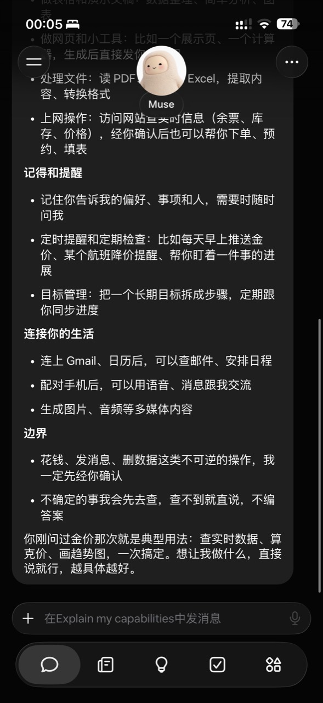
继续往下看，它还提到记住偏好、定时提醒、跟进目标，以及在获得授权后连接邮箱和日历。花钱、发消息等操作，它也提醒要先确认。这里展示的是对话说明，不表示我已经把这些账号都接入了。
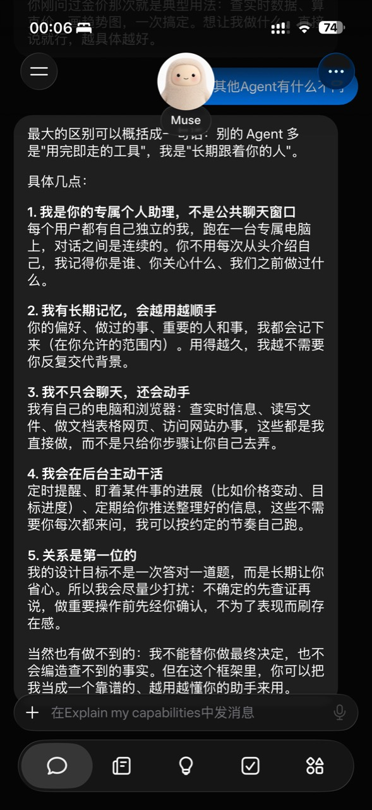
在另一段对话里，Muse 把自己描述成一个可以长期跟着任务走的个人助手。通俗点说：你今天交代的事，不用每次打开都从头讲一遍；它可以持续跟进，再把需要你决定的事送回来。
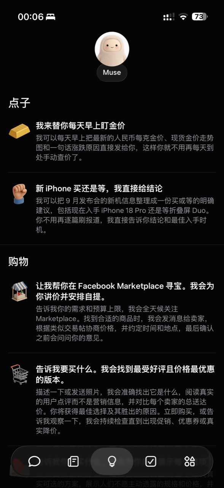
再看“点子”页面，它会给你一些可直接尝试的任务：每天推送金价、比较新手机值不值得买、在 Facebook Marketplace 寻找商品。这些是页面上的建议，你选一个，再告诉它自己的具体要求。
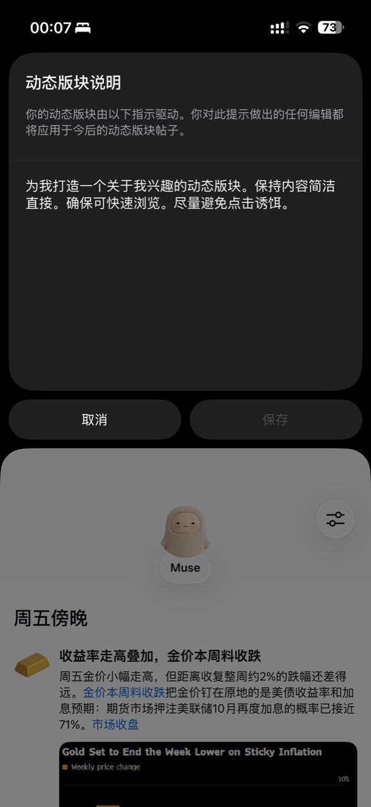
“动态版块”可以用一句话描述你想关注的内容。截图里输入的是“做一个关于我兴趣的动态版块，保持内容简洁”。它更像在给自己定制一个信息栏；这里截到的是设置过程，还没有展示完成后的效果。
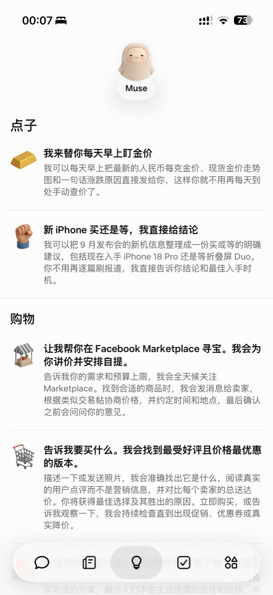
这张是同一个“点子”页面的浅色界面。深色和浅色截图内容基本一样，展示的都是 Muse 提供的任务建议；你可以从现成点子开始，再改成自己的需求。
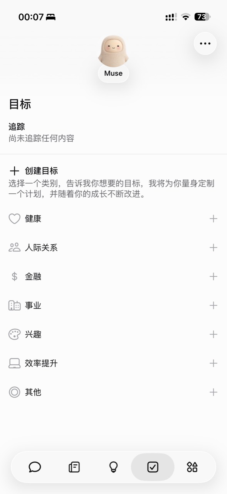
最后是“目标”页。这里有健康、人际关系、金融、事业、兴趣等分类。你可以选一个方向，说清楚想做到什么，让 Muse 帮你拆步骤、持续跟进。对话、点子、动态版块和目标，就是从这组截图里最容易看懂的几个入口。
三、它厉害的地方，是一件事可以持续做下去
我们平时的待办事项，很少是一次对话就能结束的。
“帮我准备出行”可能要等机票价格变化；“帮我整理孩子开学的事”可能要看一周的邮件和日历；“帮我控制开销”也不是今天看完账单就结束。
Meta 介绍说，Muse 可以在你关掉应用后继续处理任务；有进展或需要你决定时，再发消息过来。它还设计了 Goals 页面用来跟踪较长的目标，以及活动记录供你查看它做了什么。Muse 设计说明
官方设计团队举过一个自己的使用例子：Muse 帮忙盯孩子的开学邮件和学校网站，把日期放进家庭日历、准备采购清单，还发现了一条快截止的运动队报名通知。这个故事很能说明 Agent 的价值：它未必替你做什么惊天动地的大事，但可能替你捡起那些差点漏掉的小事。这是 Meta 团队提供的案例，不能当成每个用户都能复现的效果。Muse 设计说明
四、它知道你的偏好，会不会有点“太懂我”？
Muse 可以记住你告诉它的信息，也能根据这些信息主动建议下一步。比如你提过某位朋友不吃辣，后来让它帮你安排聚餐，它就有可能把这个条件带进计划里。Meta 产品介绍
但这里有一个很现实的问题：它越能帮你处理生活里的事，就越需要接触你的日历、邮件、购物记录等信息。所以用 Muse，重点不是找到一个“万能提示词”，而是先想清楚：这件事需要它知道什么？它需要读哪些内容？需不需要给它执行权限？
Meta 说，用户可以选择连接哪些应用，调整权限或断开连接，查看活动记录，也可以要求 Muse 忘记特定信息。Meta 还说，Muse 的对话和虚拟机数据不会直接交给其广告系统；但它在外部网站上的浏览活动仍可能像普通用户活动一样影响你看到的广告。这两句话要一起看，才不会把“保护隐私”误读成“完全没有数据流动”。Meta 产品介绍 · Meta 安全说明
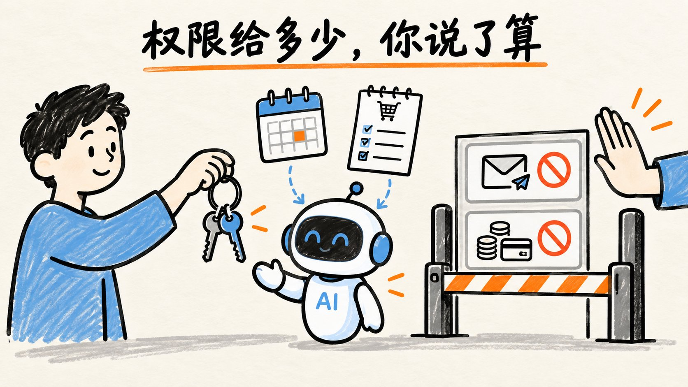
五、小白第一次用，怎么开口最合适？
我的建议是先从查、比、整理开始，别上来就让它替你付款或者管理全部邮箱。
你可以照着这个思路说：
“我想在下个月找一个周末短途旅行。先比较三个目的地的交通、住宿和总预算，做成一张简单表格。暂时不要预订、发邮件或付款；有需要我决定的地方先问我。”
这里面其实只有四件事：目标是什么、有哪些限制、希望得到什么结果、哪些动作要先问你。不需要学编程，也不需要把提示词写得像说明书。
如果第一次结果不合适，就继续像和人沟通一样补一句：“预算再低一点”“别推荐要转机的地方”“把适合带孩子的排前面”。Muse 的产品设计也允许你在它处理任务时继续补充要求，而不必等上一轮彻底结束。Muse 设计说明
六、它现在在哪里能用？大陆朋友能用吗？
截至 2026 年 9 月 25 日，Meta 官方写的是：Muse 正在美国通过 iPhone、Android 手机和 muse.ai 网页版推出；官方下载页还列出了 Mac 版。它有免费使用额度，用量不够可以等待额度恢复或选择付费订阅。Meta 产品介绍 · Muse 官方页面
大陆朋友最关心的通常是：“我能打开网站，是不是就能直接下载、注册并完整使用？”目前不能这么保证。网络能访问只是其中一步，账号注册、应用商店地区、服务开放范围和具体功能权限，还要看 Meta 当时的规则与账号实际页面。官方目前明确说的是美国推出，没有宣布对中国大陆全面开放。邀请码也只是符合条件的账号可尝试兑换奖励，不能代替地区使用资格。
最简单的判断方法是：打开官方入口，看账号能否正常注册、是否能进入 Muse、所需功能是否真的出现。不要因为别人发了一张下载截图，就认定自己一定能完整使用。（这个可以找我）
七、使用时要注意什么？
另一个边界是准确性。Muse 会做事，也就可能把事情做错。Meta 自己承认它仍会犯错，网页中的恶意指令也是持续存在的问题。它设置了独立的安全检查和敏感操作确认，但这些设计不能替代你核对收件人、日期、价格和付款金额。Meta 安全说明
所以我会把它当作一个能干活、但需要交代边界和检查结果的助手：低风险的琐事先试，高风险的动作自己看。这样最容易感受到它省了多少时间，也最容易发现它哪里还不靠谱。
说到底，Muse 值得关注的，是 AI 开始进入“帮你把事推进下去”的阶段。
如果你的账号符合条件，想自己体验，可以从官方入口进入：https://muse.ai/join。下面是我的邀请码；按邀请文案，在加入后的 48 小时内到「设置」里兑换，成功后你和我分别可获得 10 亿个 Muse 词元。奖励和资格以你在 Muse 页面看到的实际活动规则为准。
邀请码：G3IJ49
如果现在有一个 AI 可以帮你跑腿，你最想把哪件烦人的小事交给它？